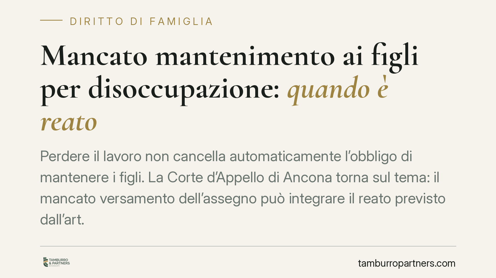

Mancato mantenimento ai figli per disoccupazione: quando è reato
Perdere il lavoro non cancella automaticamente l'obbligo di mantenere i figli. La Corte d'Appello di Ancona torna sul tema: il mancato versamento dell'assegno può integrare il reato previsto dall'art. 570-bis c.p. anche in presenza di disoccupazione. A fare la differenza è la prova, a carico dell'obbligato, di un'impossibilità economica assoluta, persistente e incolpevole.

Il caso e la questione
Il tema è ricorrente nelle aule di giustizia: il genitore obbligato smette di versare l'assegno di mantenimento ai figli e invoca la perdita del lavoro come giustificazione. La Corte d'Appello di Ancona è intervenuta di recente su una vicenda di questo tipo, ribadendo un principio consolidato: la disoccupazione, da sola, non è uno scudo automatico contro la responsabilità penale.
Nota redazionale: gli estremi esatti della pronuncia (numero e anno) sono da verificare prima della pubblicazione definitiva, per evitare riferimenti non consolidati.
Inquadramento normativo
La norma di riferimento è l'art. 570-bis del codice penale, introdotto dal d.lgs. 21/2018, che punisce il coniuge (o genitore) che si sottrae all'obbligo di corrispondere ogni tipologia di assegno dovuto in caso di separazione, divorzio o affidamento dei figli. La disposizione richiama, quanto al trattamento sanzionatorio, le pene previste dall'art. 570 c.p.
Qui serve precisione. L'art. 570, primo comma, c.p. prevede la reclusione fino a un anno o la multa; il secondo comma, applicabile quando la condotta incide sui mezzi di sussistenza, prevede pene congiunte e più severe. La cornice edittale concretamente applicabile dipende quindi dalla condotta contestata e va verificata caso per caso.
Sul rapporto tra il previgente art. 570 e l'attuale art. 570-bis la giurisprudenza di legittimità ha affrontato il tema della successione di norme con esiti articolati, discutendo anche di una possibile abolitio criminis parziale per alcune condotte. Non si tratta quindi di un quadro lineare e scontato: è un profilo che merita attenzione difensiva.
Implicazioni pratiche: l'onere della prova
Il punto decisivo riguarda chi deve dimostrare cosa. Secondo l'orientamento richiamato, grava sull'imputato l'onere di provare l'impossibilità di adempiere. E non basta una generica difficoltà economica: l'impossibilità deve essere assoluta (non una semplice riduzione del reddito), persistente (non un episodio isolato) e incolpevole (non frutto di scelte o inerzia dell'obbligato).
In concreto, chi ha perso il lavoro ma conserva altre risorse, patrimonio liquidabile o capacità lavorativa non attivata difficilmente supera questo test. La giurisprudenza valuta la condotta complessiva: se l'obbligato non ha cercato attivamente una nuova occupazione, l'elemento dell'incolpevolezza tende a venir meno.
Un ulteriore profilo spesso sottovalutato è la distinzione tra omissione totale e versamento parziale. Chi ha continuato a versare, sia pure una quota ridotta e compatibile con le proprie disponibilità, si trova in una posizione difensiva diversa rispetto a chi ha interrotto del tutto i pagamenti. Il versamento parziale, se coerente con le reali possibilità, può essere valorizzato come indice di buona fede.
La provvisionale e la sua riducibilità
La sentenza affronta anche il tema della provvisionale, cioè la somma che il giudice penale può liquidare in via immediata a favore della parte civile, nei limiti del danno già provato, in attesa della quantificazione definitiva in sede civile.
La provvisionale non è intangibile. Può essere rivista e ridotta quando emergano elementi che ne ridimensionano l'importo o la sostenibilità, fermo restando il principio di tutela del credito alimentare. È un terreno su cui la difesa può muoversi, documentando l'effettiva capacità economica dell'obbligato.
Cosa fare in concreto
- È opportuno documentare in modo tempestivo e analitico ogni variazione della propria situazione economica (perdita del lavoro, redditi residui, oneri, patrimonio).
- La prassi suggerisce di attivarsi concretamente nella ricerca di nuova occupazione, conservando prova dei tentativi compiuti: è elemento utile a dimostrare l'incolpevolezza.
- In presenza di difficoltà economiche, la via corretta è chiedere la modifica giudiziale dell'assegno, non la sua sospensione unilaterale.
- Dove possibile, il versamento parziale commisurato alle effettive disponibilità può assumere rilievo difensivo rispetto all'omissione totale.
- È consigliabile valutare con un professionista la fondatezza della contestazione e i margini di riduzione di un'eventuale provvisionale.
In sintesi
Resta fermo il principio di fondo: al centro c'è la tutela del minore e del suo diritto al mantenimento. La disoccupazione può incidere sulla misura dell'obbligo, ma non lo estingue e non autorizza l'interruzione autonoma dei versamenti. La strada legittima passa dalla revisione giudiziale, non dall'inadempimento.
Disclaimer
Contributo informativo a cura di Tamburro & Partners Avvocati - Avv. Giuseppe Tamburro. Non costituisce parere legale.
Ogni famiglia ha il suo equilibrio.
Separazione, divorzio, affidamento, assegno: se vuoi un confronto riservato su una specifica situazione, scrivi allo studio. Ti rispondiamo entro un giorno lavorativo.